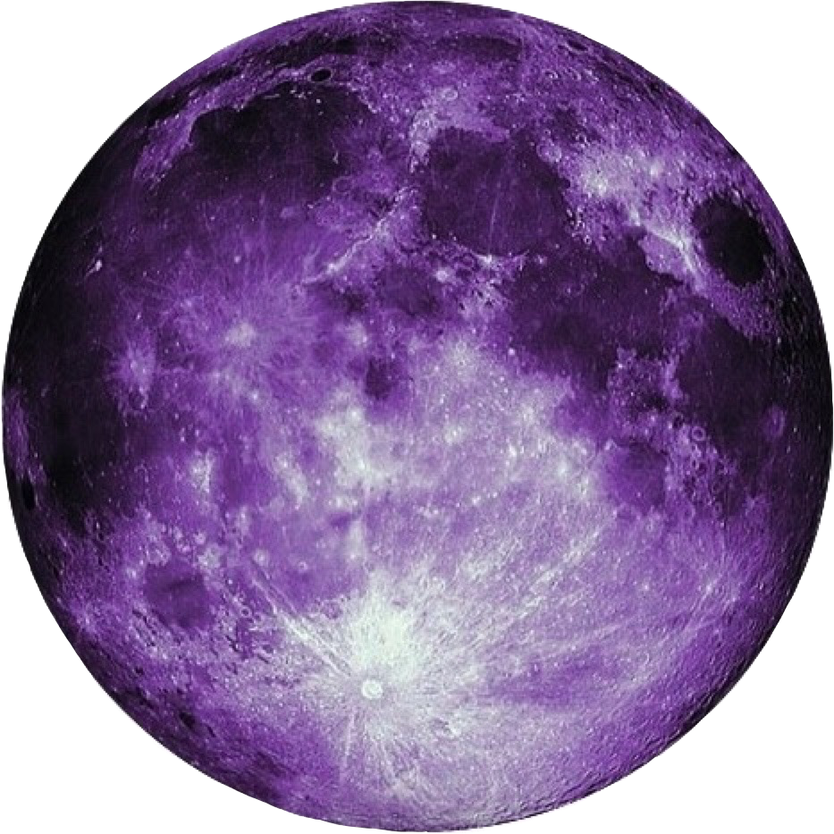

Moon

the moon is beautiful
The Moon is the only natural satellite of the Earth. The closest satellite of the planet to the Sun, since the planets closest to the Sun do not have them. The second brightest object in the earth's sky after the Sun and the fifth largest natural satellite of a planet in the solar system. The average distance between the centers of the Earth and the Moon is 384,467 km.